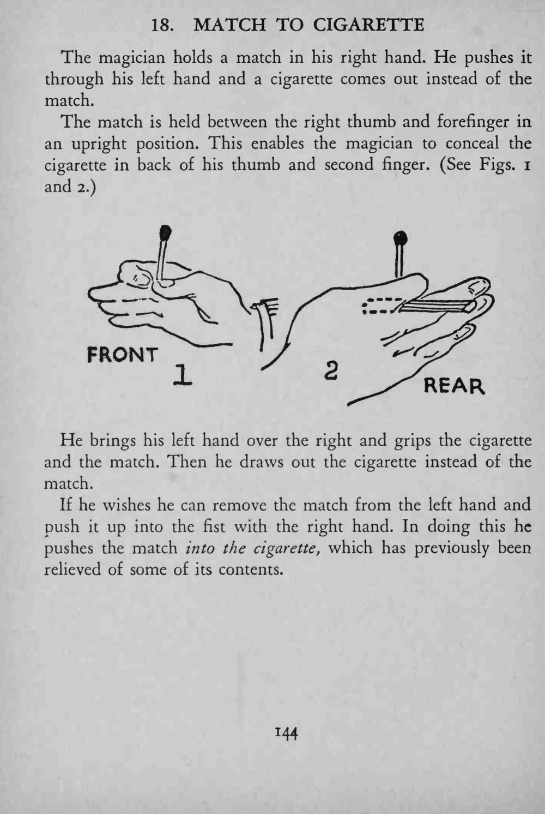
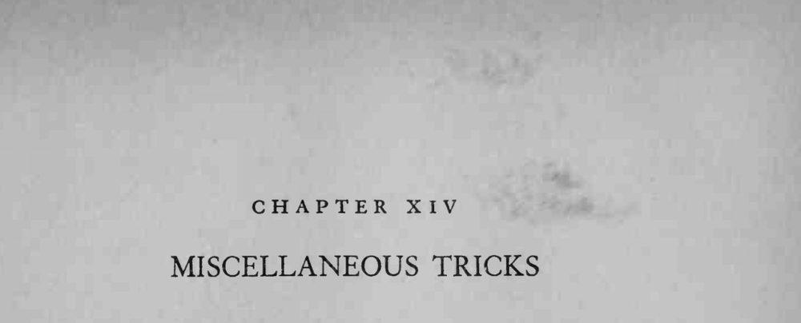

魔术师右手拿一根火柴，把它推进左手；再抽出来时，火柴已经变成了一支香烟。
藏香烟的角度要跟着火柴的方向走，烟头别从指缝露出来。


The magician holds a match in his right hand. He pushes it through his left hand and a cigarette comes out instead of the match. The match is held between the right thumb and forefinger in an upright position. This enables the magician to conceal the cigarette in back of his thumb and second finger. (See Figs. I and 2.) He brings his left hand over the right and grips the cigarette and the match. Then he draws out the cigarette instead of the match. If he wishes he can remove the match from the left hand and push it up into the fist with the right hand. In doing this he pushes the match into the cigarette, which has previously been relieved of some of its contents.